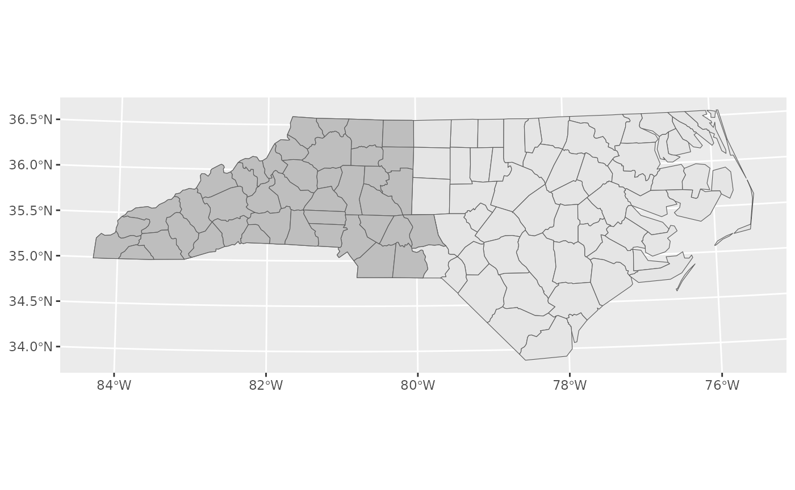
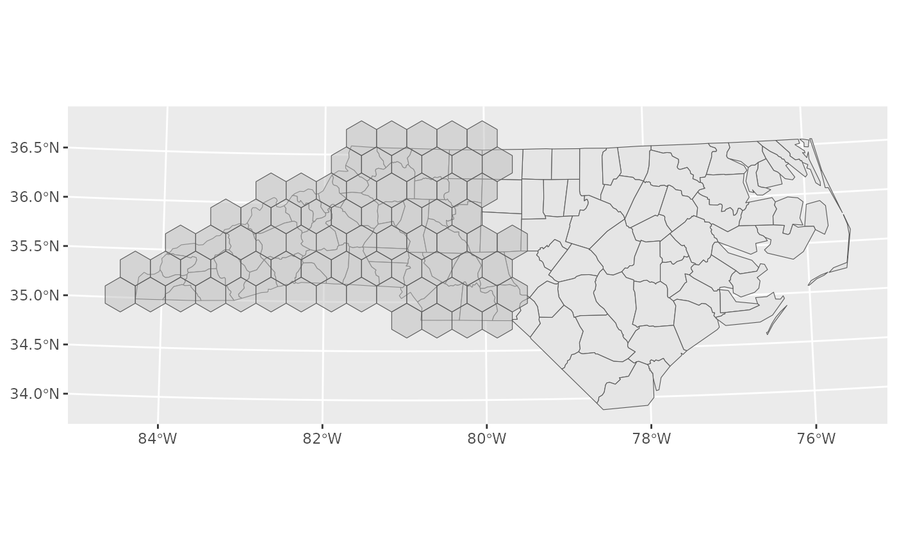
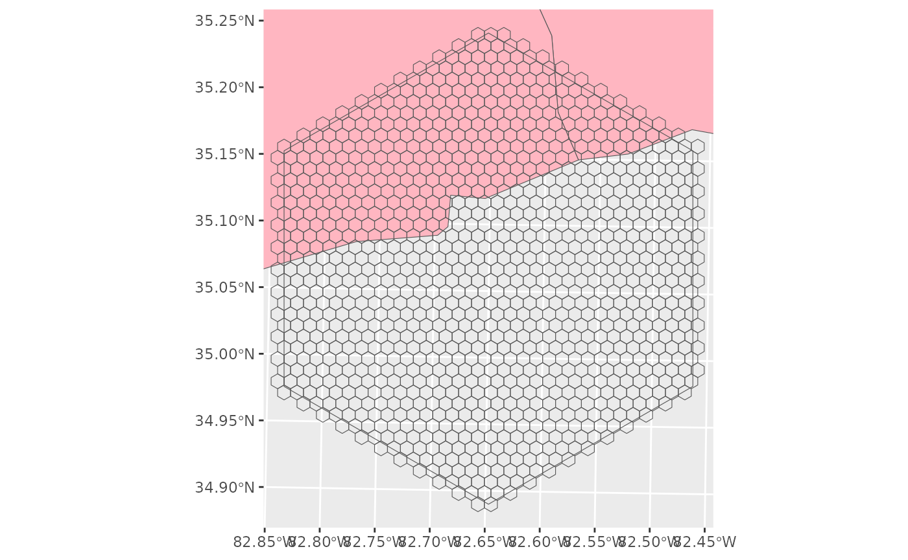

Packages and settings
##
## Attaching package: 'dplyr'## The following objects are masked from 'package:stats':
##
## filter, lag## The following objects are masked from 'package:base':
##
## intersect, setdiff, setequal, union## Linking to GEOS 3.12.1, GDAL 3.8.4, PROJ 9.4.0; sf_use_s2() is TRUEIntroduction
The goal of this vignette is provide a guide from which to work from when implementing BASS into a survey design. There currently are quite a few peculiarities in the script and the workflow should elucidate them a bit more.
Step 1. Define your area of interest
For now I’ll work with the package sf’s nc
layer. You will need to have the sf package installed
(install.packages('sf')). We need a projection that usess
metres instead of lat/lon so you may have to transform your spatial
objects.
nc <- st_read(system.file("shape/nc.shp", package="sf")) %>%
st_transform(crs = '+proj=utm +zone=17 +ellps=GRS80 +units=m +no_defs ',check=T, partial=F)## Reading layer `nc' from data source
## `/home/runner/work/_temp/Library/sf/shape/nc.shp' using driver `ESRI Shapefile'
## Simple feature collection with 100 features and 14 fields
## Geometry type: MULTIPOLYGON
## Dimension: XY
## Bounding box: xmin: -84.32385 ymin: 33.88199 xmax: -75.45698 ymax: 36.58965
## Geodetic CRS: NAD27
nc_coords <- st_centroid(nc) %>%
st_coordinates %>%
as_tibble## Warning: st_centroid assumes attributes are constant over geometriesWe will just survey the western half of the state for simplicity (shown in grey).

For today, lets aim to survey North Carolina using 1km sample units and 34km study areas.
Step 2. Create hexagons
Often this is most usefully done outside of R, with habitat and costs incorporated into the hexagons, but I’ll run through it here to detail how the data should be formatted.
SA <- create_hexes(land = nc_for_survey,
hex_size = 100000,
units = 'ha' )
Here is an example study area. Not all of the study area is within North Carolina (pink) and so we will not deploy here.
su_ex <- create_hexes(land = SA[16,],
hex_size = 100,
units = 'ha' )
ggplot() +
geom_sf(data = nc, fill = 'lightpink') +
geom_sf(data = SA[16,], fill = NA) +
geom_sf(data = su_ex, fill = NA) +
coord_sf(xlim =st_bbox(SA[16,])[c(1,3)], ylim = st_bbox(SA[16,])[c(2,4)])
st_area(SA[16,])## 1e+09 [m^2]
pHA_region <- tibble(lc = 1:18) %>%
mutate(pHA_region = runif(18),
pHA_region = pHA_region/sum(pHA_region),
varbeta = pHA_region*0.2)
# varbeta <- 0.2
estBetaParams <- function(mu, var) {
alpha <- ((1 - mu) / var - 1 / mu) * mu ^ 2
beta <- alpha * (1 / mu - 1)
return(params = list(alpha = alpha, beta = beta))
}
beta_values <- estBetaParams(pHA_region$pHA_region, pHA_region$varbeta)
SA_LC <-
expand_grid(hex_id = unique(SA$hex_id), lc = 1:18) %>%
left_join(pHA_region, by = 'lc') %>%
mutate(LandCover = glue::glue("LC{stringr::str_pad(lc,width = 2, side = 'left', pad = 0 )}"),
pha = rbeta(nrow(.),beta_values$alpha,beta_values$beta)) %>%
# a = (pHA_region**2)*((1-pHA_region)/(varbeta)- (1/pHA_region)),
# pha = rbeta(nrow(.),a,a*(1/pHA_region-1))) %>%
group_by(hex_id) %>%
mutate(ha = pha/sum(pha)*1e9*.0001,
pha = ha/sum(ha)) %>% ungroup